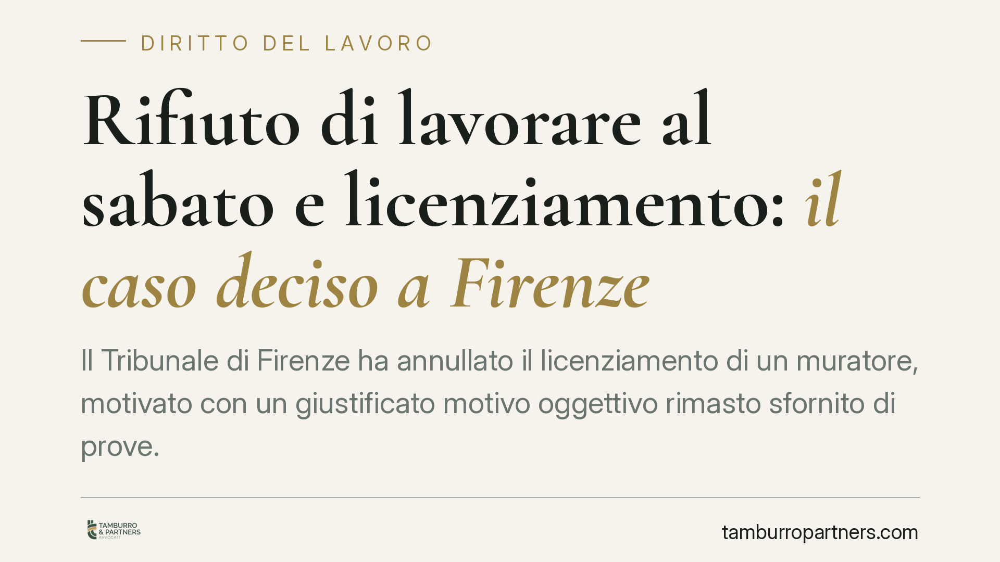

Rifiuto di lavorare al sabato e licenziamento: il caso deciso a Firenze
Il Tribunale di Firenze ha annullato il licenziamento di un muratore, motivato con un giustificato motivo oggettivo rimasto sfornito di prove. Mancavano i documenti sulla chiusura dei cantieri e sul tentativo di ricollocazione. La decisione ricorda che il datore deve dimostrare tanto l'effettività della ragione economica quanto l'impossibilità di reimpiego del lavoratore.

Il caso
Un operaio del settore edile viene licenziato dopo aver rifiutato di prestare servizio al sabato. Il datore di lavoro qualifica il recesso come licenziamento per giustificato motivo oggettivo (GMO), cioè un licenziamento fondato su ragioni economico-organizzative dell'impresa e non su una colpa del dipendente.
Il Tribunale di Firenze, Sezione Lavoro, ha ritenuto il motivo privo di riscontro. Mancavano le prove documentali della chiusura dei cantieri e non risultava alcun tentativo di ricollocare il lavoratore in altre mansioni. Il licenziamento è stato quindi annullato.
Il doppio onere probatorio a carico del datore
Nel GMO il datore di lavoro deve provare due elementi distinti.
Primo: l'effettività della ragione economica o organizzativa posta a base del recesso. Non basta allegarla, va documentata (contrazione delle commesse, soppressione della posizione, riorganizzazione reale).
Secondo: il cosiddetto repêchage, ossia l'impossibilità di adibire il lavoratore a mansioni diverse compatibili con il suo profilo, anche inferiori. Se esistono posizioni disponibili e il datore non le offre, il licenziamento è illegittimo.
Nel caso fiorentino sono venuti meno entrambi i profili: assenza di prova sulla chiusura dei cantieri e assenza di prova sul tentativo di ricollocazione.
Attenzione al regime sanzionatorio applicabile
Qui occorre una distinzione dirimente, spesso trascurata.
Per i lavoratori assunti fino al 6 marzo 2015 si applica l'art. 18 della L. 300/1970 (Statuto dei lavoratori). Se il GMO è manifestamente insussistente, il giudice può disporre la reintegra attenuata: ripristino del rapporto e indennità risarcitoria fino a un massimo di dodici mensilità. Tale indennità è calcolata al netto di quanto il lavoratore ha percepito da altre occupazioni nel frattempo (*aliunde perceptum*) e di quanto avrebbe potuto percepire con l'ordinaria diligenza (*aliunde percipiendum*).
Per i lavoratori assunti dal 7 marzo 2015 vige invece il D.Lgs. 23/2015 (tutele crescenti). In questo regime il GMO illegittimo non dà più diritto alla reintegra, ma soltanto a un'indennità economica parametrata all'anzianità di servizio. La reintegra resta possibile solo in ipotesi specifiche, come la nullità del recesso.
La data di assunzione, quindi, cambia radicalmente le conseguenze. Per un muratore questa differenza non è un dettaglio: determina se potrà tornare al lavoro o solo ottenere un risarcimento.
GMO insussistente e licenziamento ritorsivo: due piani diversi
Quando il motivo economico è pretestuoso e cela una vera intenzione punitiva, il caso può scivolare verso il licenziamento ritorsivo. Il recesso ritorsivo è quello determinato in via esclusiva da un motivo illecito (art. 1345 c.c.), ad esempio la reazione a una legittima rivendicazione del lavoratore.
Le conseguenze non coincidono. Il GMO insussistente resta un licenziamento illegittimo, sanzionato secondo il regime sopra descritto. Il licenziamento ritorsivo è invece nullo, e la nullità comporta la reintegra piena con risarcimento non limitato dai tetti previsti per l'illegittimità semplice, indipendentemente dalla data di assunzione. Chi ritiene di aver subito un recesso ritorsivo deve però dimostrare che l'intento illecito è stato l'unica ragione del licenziamento.
Lavoro al sabato: quando è dovuto
L'obbligo di prestare servizio al sabato non è automatico. Dipende dal contratto individuale e dal CCNL applicato. Se l'orario contrattuale non prevede il sabato come giornata lavorativa ordinaria, il rifiuto del lavoratore può essere legittimo e non integra di per sé un inadempimento.
Implicazioni pratiche
Per l'impresa. Un licenziamento per GMO regge solo se è supportato da documentazione coerente: dati sulla riduzione dell'attività, evidenza della soppressione della posizione, verifica scritta dell'assenza di alternative di reimpiego. Le motivazioni verbali o generiche non hanno valore in giudizio.
Per il lavoratore. Il rifiuto di una prestazione non prevista dal contratto non giustifica di per sé il recesso. Di fronte a un licenziamento sospetto, contano i termini e la ricostruzione documentale della vicenda.
Cosa fare in concreto
- Verifica nel contratto individuale e nel CCNL se il sabato rientra nell'orario ordinario prima di rifiutare la prestazione.
- Conserva ogni comunicazione scritta relativa al recesso e alle mansioni proposte o negate.
- Impugna il licenziamento entro 60 giorni dalla comunicazione, con atto scritto (impugnazione stragiudiziale, art. 6 L. 604/1966).
- Deposita il ricorso giudiziale, oppure attiva conciliazione o arbitrato, entro i successivi 180 giorni: decorso inutilmente questo secondo termine, l'impugnazione perde efficacia.
- Data la brevità dei termini decadenziali, è opportuna una valutazione legale tempestiva della posizione, anche per individuare il regime sanzionatorio applicabile in base alla data di assunzione.
Disclaimer
Contributo informativo a cura di Tamburro & Partners - Avv. Giuseppe Tamburro. Non costituisce parere legale.
Ogni storia di lavoro ha i suoi tempi.
Se gestisci HR e vuoi un confronto su contenzioso, ispezioni o licenziamenti, scrivi allo studio. Ti rispondiamo entro un giorno lavorativo.